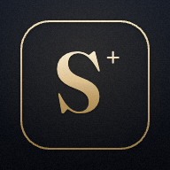

Loading…

CompTIA Security+ · SY0-701
Work the Professor Messer SY0-701 playlist, track your confidence, and review your weak spots — synced across your iPhone and iPad.
Watching ≠ exam-ready. Use this to stay on pace — let practice tests be your real go/no-go.
Your daily pace is sized to finish the unwatched videos by this date.